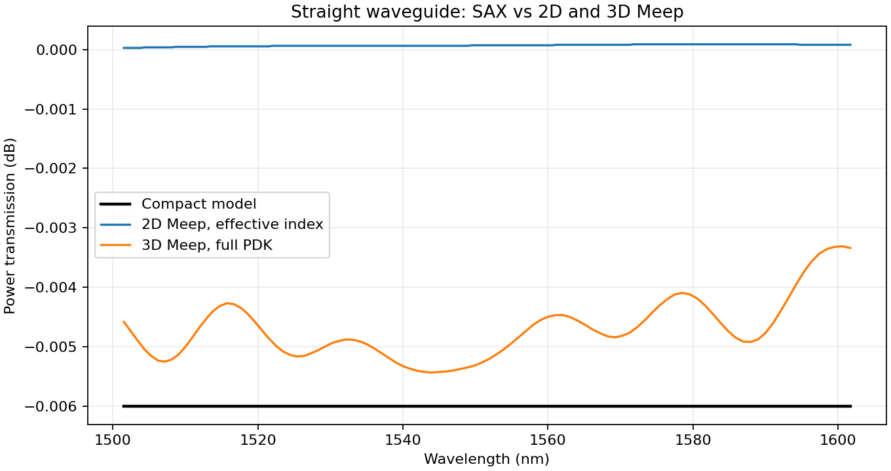
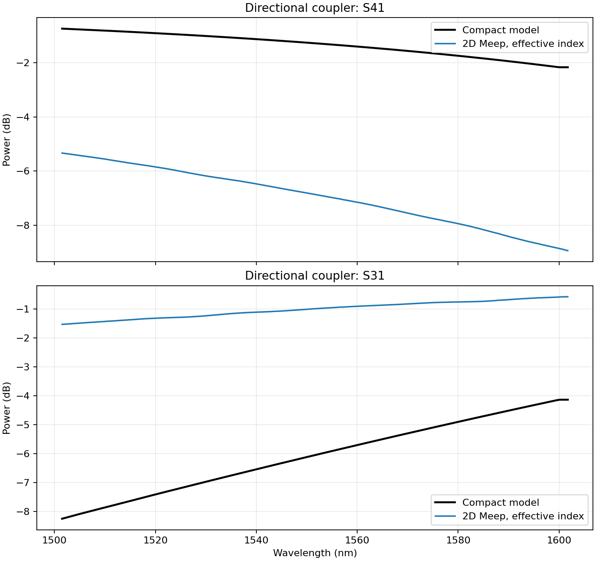
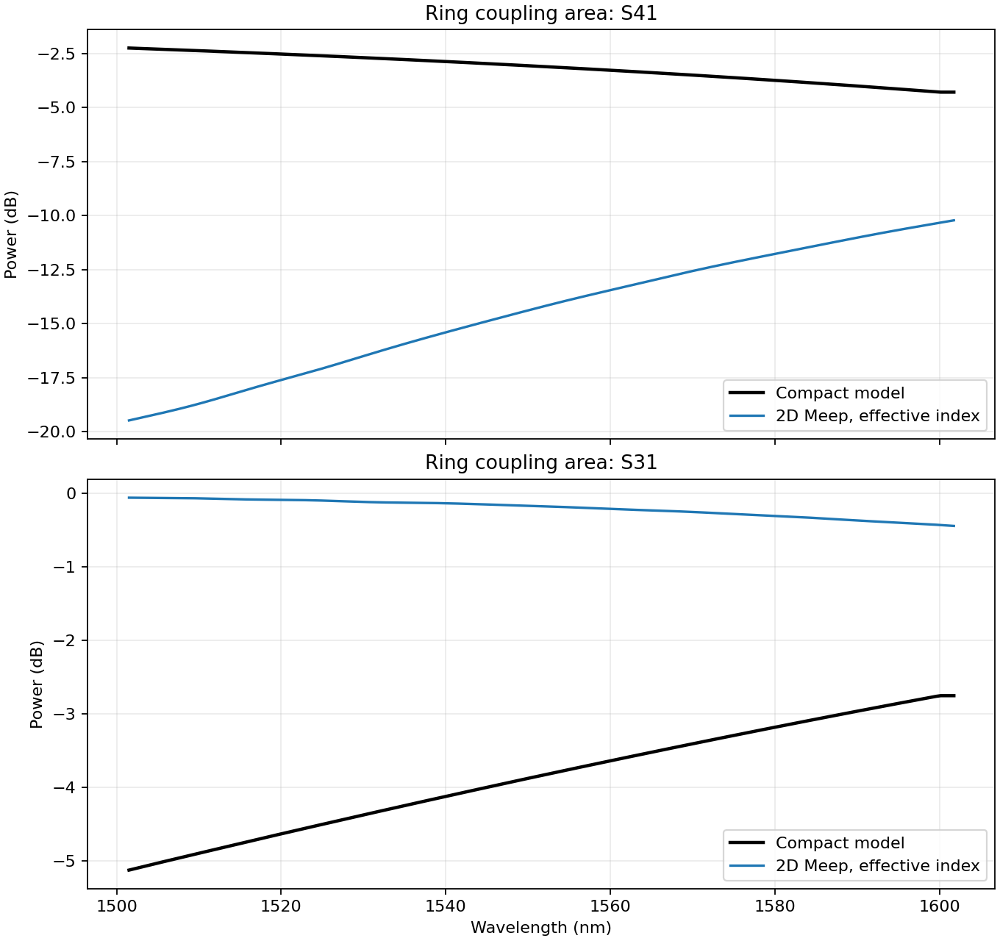
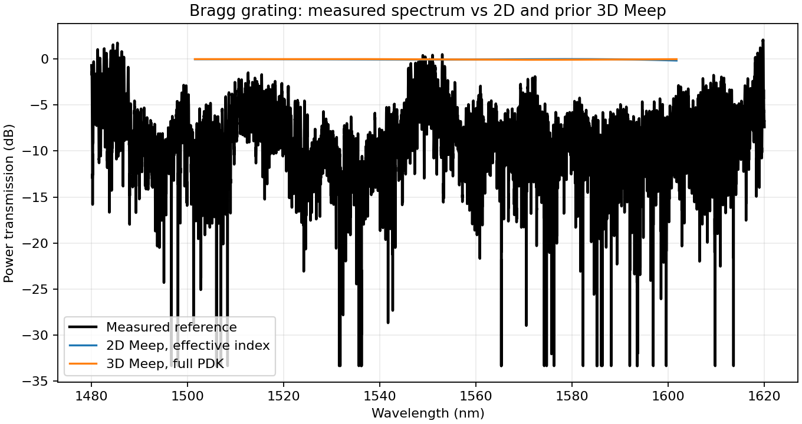

Straight waveguide
L = 20 µm · 23.00 × 0.50 µm

download GDS · 2-D res 30 + 3-D res 20/30

runs: 2d_straight3d_straight
GDS geometry for each case plus the completed Meep runs and reference comparisons from branch pdk-validation.
run_all, then runs five 2-D cases
(15–20 h). MZI and a full ring have no completed run yet. The layouts and completed
runs below are the data that exist now.
L = 20 µm · 23.00 × 0.50 µm
download GDS · 2-D res 30 + 3-D res 20/30

runs: 2d_straight3d_straight
gap = 0.2 µm, L = 10 µm · 33.00 × 4.50 µm

download GDS · 3-D not converged

runs: 2d_coupler
gap = 0.1 µm, r = 10 µm · 28.50 × 13.10 µm

download GDS · 3-D not converged

runs: 2d_ring_coupling
ΔL = 10 µm · 112.10 × 53.50 µm

download GDS · 2-D res 40 was reaped
No comparison plot for this case yet.
runs: no completed run
r = 10 µm, gap = 0.1 µm · 28.50 × 21.70 µm

download GDS · 2-D res 15, 51 points
No comparison plot for this case yet.
runs: 2d_ring_exploratory
n = 20 periods · 9.38 × 0.60 µm

download GDS · 2-D res 30 + 3-D res 30
